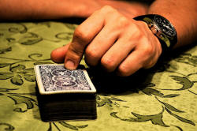

Teaching speaking: the essentials

You should have followed the guide to what speaking skills actually
are before tackling this.
Here's a brief recapitulation of the main concerns of that guide.
|
Speaking is difficult because it is (or should be):
|
The cumulative effects of this result in 6 pressures:
|
Native speakers have a range of coping strategies to deal with these pressures, including:
- taking account of what knowledge is shared and using short cuts
- referring to things outside the conversation which are known and making reference to the environment
- using lots of prefabricated formulaic expressions
- stringing ideas together as they occur using simple connectors like ... and ... and ...
- resorting to colloquial and imprecise language and to simplification
- false starting and backtracking
- using notes in formal situations
They also help the listener by:
- substitution
- repetition
- reformulation
- self-correction
Native speakers are also (usually unconsciously) aware of the five elements of turn taking.
Finally, in that guide we explained how conversation is structured according to Initiation, Response and Follow-up sequences of moves. At the end of that section, it was optimistically stated that all of this is teachable.
As you can see, there are a number of quite complicated issues here but, as with all else, we can break things down and give our learners training and practice in the micro-skills they need before plunging them into complex speaking tasks.
Not making things more difficult than they need to be |
The first thing we can do in the classroom is lessen as many of the
pressures as we can to give our students confidence and the space they
need to think. We have seen what the pressures are. Now it's
time to see how to reduce them. In the following, there's a list
of the pressures. How would you go about reducing them? The
answers are really quite simple.
Click on the table when you have
them.
That's all pretty straightforward stuff but at the planning stages of a lesson which contains a speaking component, take the time to go through the list and check that you have responded to the predictable difficulties.
 |
More explicitly |
- Shared knowledge

We need to allow our learners to develop the skill of using shared knowledge to make speaking easier for them but still comprehensible for the listener. Here are some ideas:- Get students to work together on a picture story to plan how
to tell it to the rest of the class (or another pair /
individual) who does not have access to the pictures.
While working together the learners will often take short cuts
and refer to 'the man' or whatever but if it is clear to them
that they are going to have to tell the story without a visual
prompt, they will be encouraged to notice the extra information
they'll need to add to make it work.
Clearly this needs preparation so step 1 is to have a picture on the board (or wherever) and invite your students to describe it. Then hide the graphic and ask them to do it again as if you had never seen it. Whenever they start to use shared information, interrupt with questions such as What house? Where is the car? etc. to alert them to what is shared and what isn't and how to explain.
You can reverse this procedure and ask people to respond to a picture only one of them can see by talking to a you or a partner and then run the same exercise with both people having access to the picture. Get them explicitly to notice differences in language. You can do this in three with two talkers and one noticer. Then swap roles around. - Get the learners to imagine a location within the school /
college / campus where you are teaching and direct a partner to
it.
Now get them to do it with a building only one of them is familiar with.
Finally, get them explicitly to notice the different kinds of language they used.
- Get students to work together on a picture story to plan how
to tell it to the rest of the class (or another pair /
individual) who does not have access to the pictures.
While working together the learners will often take short cuts
and refer to 'the man' or whatever but if it is clear to them
that they are going to have to tell the story without a visual
prompt, they will be encouraged to notice the extra information
they'll need to add to make it work.
- Formulaic, prefabricated expressions
There are lots of these but they fall into some accessible categories so we should teach them that way. Here's an example or two:- Focus on 6 or so formulaic expressions to introduce personal
opinion, e.g.:
as far as I'm concerned
to my mind
in my view
from where I stand
as far as I can see
it seems to me that
Introduce them via a dialogue or a text of an email (which often closely resembles spoken language) and then set up groups of three. Two students discuss a topic about which they disagree, the third notes when all six expressions have been used and calls a halt. Then they change roles. - You can do the same with other types of formulaic language
such as thinking time fillers:
well, let me see
give me a second to think
Hmm, that's an interesting question
well, now, what can I say?
etc.
With these you can set up situations in which learners spring unexpected questions on each other.
- Focus on 6 or so formulaic expressions to introduce personal
opinion, e.g.:
- Using parataxis

This isn't usually taxing for learners because the structures are so simple. What they need, however, is sensitising to the fact that there's nothing wrong with being simple. To do this an authentic dialogue showing basic parataxis followed by an anecdote-telling session is usually enough. - Using imprecise language, general items and
circumlocution
- This is often done through presenting the sorts of language we use when we aren't clear what something looks like exactly: things like: roundish, sort of curved at the top, near-enough flat, square shaped, bluish and so on and then using realia with objects the learners do not know the precise name for or whose names they are not allowed to use, getting students to describe the objects to each other until the other person guesses right.
- In the same way, it is possible to use either pictures or real objects and get students to help others guess what it is without using its name. For example, It's a small plasticky sort of rectangular thing you stick in your camera to store images on.
- Learners like acquiring general item terms such as thingy, stuff, whatsit, doobrie and any of the 50 or so alternatives and once presented (not all 50, please) they are easy to practise in the same way with mystery materials or objects.
- False starting and backtracking

These are a bit more challenging to practise because they are responses to error on the part of the speaker. However, one productive way is to allow a learner to start an anecdote and then persistently interrupt with No, it was a ..., forcing them to backtrack and restart. For example:
A: I was walking down the road ...
B: No, it was a path.
A: Oh, actually it was a path but anyway I met this old man ...
B: No, he wasn't old.
A: Well OK, he wasn't really old but anyway ...
etc.
Note the need to teach the use of but anyway to do this well.
After a few demonstrations from you, the learners can have an enjoyable go at doing it to each other.
The most important thing to recognise here is that in informal spontaneous conversation, such tactics are not only permitted, they are expected. - Using notes

Some learners may never need this skill but giving practice in getting students to present longer stretches of spoken language, using notes to guide them is not difficult to set up or do. The trick (see above) is to make sure they have adequate research and presentation time.
Getting them to present to small groups rather than the whole class has two advantages:- it allows them to do it again (and again) building up confidence and familiarity and learning from experience
- it reduces the stress involved in speaking to larger groups
IRF sequences |
It's easy enough to analyse example dialogues showing how the more natural ones involve a speaker responding and initiating in the same turn, more difficult to practise them. Here are a couple of ideas to use after you have laid the groundwork and your students are aware of the need to respond and initiate.
- Pairwork in threes
Two students play the roles of questioner and informant (as in the example in the first section of this guide) or discuss something familiar and simple such as their home town or favourite sports clubs.
The third student listens for the times that either participant uses a response combined with an initiation and at the end reports back, evaluating how the other two did. Then they swap roles. - Write and perform
Using a picture prompt, e.g.,

learners write a dialogue between two people on a train, taking care to incorporate the idea of responses and initiations occurring in the same move. They can perform (not read aloud) the dialogue to others to see how the conversation is structured
Spontaneity
Speaking is something we occasionally need to do with neither
preparation nor thinking time and a good way to practise this is to
demand instant responses from learners to projected images. It
isn't difficult to find intriguing, cute or emotive images on the web
(news pages are a good source) but here are three examples of the kind
of thing:


If the instant-response demand is frequently done, learners quickly become adept at and accustomed to thinking quickly and reacting appropriately. That's a confidence booster among other things.
|  |
Turn-taking |
Speaking is a two-way process unless we are speaking to an
audience we can neither see nor hear.
A key skill that learners will have to master is the ability to take
turns in conversations: to hold on to, give up and take a turn
appropriately.
This is a reasonably technical area but one you may like to
investigate. The link to the guide is below.
| Related guides | |
| speaking | for the essentials-only guide to what the skill involves |
| assessing speaking | for the in-service guide to assessing speaking skills abilities |
| turn-taking skills | what they are and how to teach them |
| context | for a guide to the essentials of context and co-text |
| skills index | for the index to the essentials of the four main language skills |
The only test on this is for you to evaluate whether you are teaching speaking or just practising talking. You should be doing the former.
References you may find helpful:
Brown, G & Yule, G, 1983, Teaching the Spoken Language,
Cambridge: Cambridge University Press
Bilbrough, N, 2007, Dialogue Activities: Exploring Spoken
Interaction in the Language Class, Cambridge: Cambridge University
Press
Hughes, R, 2002, Teaching and Researching Speaking, Harlow:
Longman
Luoma,
S, 2004, Assessing Speaking, Cambridge: Cambridge University
Press
Maley, A & Duff, A, 1982, Drama Techniques in Language Learning,
Cambridge: Cambridge University Press
Porter Ladousse, G, 1987, Role Play, Oxford: Oxford University
Press
Rogerson, P & Gilbert, JS, 1990, Speaking clearly: pronunciation
and listening comprehension for learners of English Student's Book,
Cambridge: Cambridge University Press